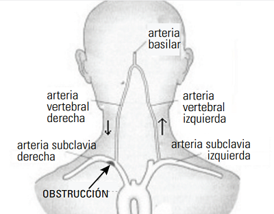

<html>
<head>
<title>MECANICA DE FLUIDOS, G20-Fd-28, fisica online, ejercicios resueltos</title>
<meta http-equiv="Content-Type" content="text/html; charset=UTF-8">
<meta name="keywords" content="problemas resueltos, ejercicios resueltos, cbc, fisica, biofisica, fluidos, liquidos, gases, bernoulli, poiseuille, viscosidad, ideales, viscosos, humedad, difusion, osmosis, nomesalen, no me salen, ricardo cabrera" />
<meta name="description" content="Ejercicios y problemas resueltos, y apuntes teóricos de Fluidos, mecanismos de transporte de fluidos" />
<link rel="stylesheet" href="win_ie.css">
<style type="text/css">
<!--
.style1 {
	color: #3F6386;
	font-weight: bold;
}
.Estilo3 {color: #3F6386}
.Estilo16 {font-size: 16px}
.Estilo26 {	font-family: "Times New Roman", Times, serif;
	font-weight: bold;
	font-style: italic;
	font-size: 16px;
}
.Estilo25 {font-family: Verdana, Arial, sans-serif}
.Estilo12 {font-size: 10px}
.Estilo15 {color: #000000}
.Estilo22 {color: #0000FF}
.Estilo17 {font-size: 10px}
.Estilo36 {font-weight: bold; font-size: 11px; font-style: italic; }
.Estilo37 {font-size: 10px}
.Estilo32 {font-weight: bold; font-size: 11px;}
.Estilo38 {font-size: 11px}
.Estilo27 {font-weight: bold}
.Estilo29 {font-size: 11px; font-style: italic; }
-->
</style>
</head>

<body bgcolor="#FFFFFF" text="#000000" alink="#000000" leftmargin="0" topmargin="0" marginwidth="0" marginheight="0">
<table align=center width="600" border="0" cellspacing="0" cellpadding="0"> 
  <tr bgcolor="#000000" align="right"> 
<td></td></tr> <tr bgcolor="#BB0000" valign="middle" align="left"> 
<td class="bodytext" height="20"><TABLE WIDTH="100%" BORDER="0" CELLSPACING="0" CELLPADDING="0">
  <TR ALIGN="center" CLASS="menuitem">
    <TD WIDTH="43" height="19" CLASS="menuitem"><A HREF="../../index.html" CLASS="menuitem">&nbsp;<B>home</B>&nbsp;</A></TD>
    <TD WIDTH="5" CLASS="menuitem"><FONT COLOR="#000000">|</FONT></TD>
    <TD width="119" CLASS="menuitem"><strong><a href="index_hdinam.html" class="menuitem">más de hidrodinámica </a> </strong></TD>
    <TD width="9" CLASS="menuitem"><FONT COLOR="#000000">|</FONT></TD>
    <TD width="127" CLASS="menuitem"><strong><a href="../../intro_NMS.html" class="menuitem">otros temas de F&iacute;sica</a></strong></TD>
    <TD width="10" CLASS="menuitem"><FONT COLOR="#000000">|</FONT></TD>
    <TD width="160" CLASS="menuitem"><strong><a href="../../lista_ciruela.html" class="menuitem">lecciones del maestro Ciruela </a></strong></TD>
    <TD width="8" CLASS="menuitem"><FONT COLOR="#000000">|</FONT></TD>
    <TD width="67" CLASS="menuitem"><strong><a href="../../lista_tonterias.html" class="menuitem">tonter&iacute;as</a></strong></TD>
    <TD WIDTH="7" CLASS="menuitem"><a href="../energia/index_energia.html" class="menuitem"></a><FONT COLOR="#000000">|</FONT></TD>
    <TD WIDTH="48" CLASS="menuitem">&nbsp;<B><FONT FACE="Arial, Helvetica, sans-serif"><A HREF="mailto: ricuti@gmail.com" CLASS="menuitem">@</A></FONT><A HREF="../../index.html" CLASS="menuitem"></A></B>&nbsp;</TD>
  </TR>
</TABLE></td></tr> <tr> <td class="bodytext" height="8"><p></td>
</tr> 
<tr align="center"> <td height="1060"> <table width="600" border="0" cellspacing="0" cellpadding="0"> 
<tr class="bodytext"> <td valign="top" width="594" height="1021"> 
<table width="600" border="0" cellspacing="0" cellpadding="0"> <tr> 
  <td height="74" bgcolor="#D7FFFF" class="bodytext"><span class="bodytext"><strong><em><strong><em><strong><strong>&#160; &#160;</strong></strong></em></strong></em>NO ME SALEN<br>
</strong></span><span class="Estilo3"><em class="bodytext "><strong><em><strong><em><strong><strong>&#160; &#160;</strong></strong></em></strong></em>(<strong>PROBLEMAS RESUELTOS   DE BIOF&Iacute;SICA DEL CBC</strong>)</strong></em></span><br>
      <span class="titulograndegris Estilo16"><strong><em><strong><em><strong><strong>&#160; &#160;</strong></strong></em></strong></em>FLUIDOS<br>
      </strong></span><em class="bodytext "><strong><em><strong><em><strong><strong>&#160; &#160; </strong></strong></em></strong></em></strong></em><strong class="titulochicogris">Fluidos ideales</strong><br> </td>
  <td class="bodytext" rowspan="3" height="74" width="4">&nbsp;</td>
  <td class="bodytext" height="74" rowspan="3" valign="top" width="86"> 
<p></p></td></tr>
  <tr>
    <td height="18" bgcolor="#FFFFFF" class="bodytext">&nbsp;</td>
  </tr> 
<tr> <td height="51" valign="middle" class="bodytext"><table width="100%" border="0">
  <tr class="bodytext">
    <td width="28%" height="191" valign="top"></td>
    <td width="2%" valign="top">&nbsp;</td>
    <td width="70%" valign="top"><p><strong>28-  Síndrome del robo de la subclavia.  En 1954 el célebre músico ArturoToscanini se desmayó en el escenario mientras estaba dirigiendo su  orquesta. Sufrió un ataque isquémico transitorio  (AIT) por el llamado <em>Síndrome del robo de la  subclavia</em>.  </strong></p>
      <p><strong> Como muestra la figura, las arterias subclavias  derecha e izquierda irrigan sendos miembros  superiores. De cada una bifurca una rama con  flujo hacia la cabeza, la arteria vertebral. Las arterias vertebrales derecha e izquierda confluyen en  la arteria basilar que lleva sangre al cerebro.</strong></p></td>
  </tr>
</table></td>
  </tr>
<tr>
  <td height="150" align="center" valign="middle" class="bodytext"><p></p></td>
  <td class="bodytext">&nbsp;</td>
  <td class="bodytext" valign="middle">&nbsp;</td>
</tr>
<tr>
  <td height="25" align="left" valign="middle" class="bodytext">&nbsp;</td>
  <td class="bodytext">&nbsp;</td>
  <td class="bodytext" valign="middle">&nbsp;</td>
</tr>
<tr>
  <td height="156" align="left" valign="middle" class="bodytext"><p><strong>En el síndrome del robo de la subclavia existe  un estrechamiento de una de las dos arterias subclavias en un punto próximo al punto de bifurcación de la arteria vertebral. En el caso de la figura,  un depósito de placa reduce el radio efectivo de la  arteria subclavia derecha. El ataque cerebrovascular ocurre en el momento que la persona ejercita  vigorosamente el brazo derecho. Durante el evento el flujo por esa arteria vertebral se invierte: la  sangre que sube por la arteria vertebral izquierda  en lugar de seguir subiendo por la arteria basilar,  se desvía y baja por la arteria vertebral derecha  alimentando la subclavia afectada.</strong></p>
    <p><strong>La arteria subclavia derecha "roba" la sangre  que debería ir al cerebro provocando un desmayo. El ataque es transitorio pues en el reposo la  sangre en ambas arterias vertebrales vuelve a  fluir normalmente hacia la arteria basilar.  </strong></p>
    <p><strong>a) ¿Cómo es la presión en el tramo del vaso  estrechado respecto al resto del vaso?  </strong> En el punto de la arteria subclavia donde  bifurca la arteria vertebral existe un depósito de  placa que reduce el radio efectivo del vaso. Según  el análisis del problema 26 la presión (p2) en dicho  estrechamiento es menor que en el tramo de calibre normal (p1). La diferencia de presión (p1 - p2)  depende de la velocidad de la sangre.</p>
    <p><strong>b) ¿Por qué el ataque ocurre cuando el individuo agita el brazo derecho?</strong> Al agitar vigorosamente el brazo derecho  afectado, se hace necesario aumentar enormemente el aporte de O2 a los músculos esqueléticos, por lo que aumenta el caudal.  Según el análisis del problema 27 la diferencia  de presión entre la parte ancha y la estrecha del  vaso (p1 - p2) depende del caudal circulante:  cuanto mayor es el caudal más se acentúa &ldquo;el  bajón&rdquo; de presión en el tramo del vaso que tiene  el estrechamiento.  Si la velocidad en la zona estrecha alcanza un  valor crítico la presión p2 es tanto menor que p1  que el flujo por la arteria vertebral derecha se  invierte: la sangre que sube por la arteria vertebral  izquierda en lugar de seguir subiendo por la arteria basilar, se desvía y baja por la arteria vertebral  derecha hacia la zona de baja presión p2 alimentando la subclavia afectada. La arteria subclavia  derecha "roba" la sangre que debería ir al cerebro provocando un desmayo.  (Hipótesis de trabajo = se considera que la  sangre se comporta como un líquido ideal por  tratarse de vasos anchos y de corto recorrido).</p></td>
  <td class="bodytext">&nbsp;</td>
  <td class="bodytext" valign="middle">&nbsp;</td>
</tr>
<tr>
  <td align="center" valign="middle" class="bodytext">&nbsp;</td>
  <td width="4" class="bodytext">&nbsp;</td>
  <td width="86" valign="top" class="bodytext">&nbsp;</td>
</tr>
<tr>
  <td height="32" align="left" class="bodytext"><p class="epigrafe"><strong>Las respuestas fueron tomadas de la guía de ejercicios de la cátedra de Biofísica del CBC, UBA.</strong>&nbsp;</p></td>
  <td class="bodytext">&nbsp;</td>
  <td width="86" rowspan="3" valign="bottom" class="bodytext"></td>
</tr>

<tr>
  <td height="18" bgcolor="#FFFFFF" class="bodytext">&nbsp;</td>
  <td class="bodytext">&nbsp;</td>
  </tr>

<tr> <td align="center" valign="middle" bgcolor="#CCCCCC" class="bodytext"><table width="93%" border="0">
  <tr>
    <td class="epigrafe">Algunos derechos reservados. 
      Se permite su reproducci&oacute;n citando la fuente. Se recomienda fervientemente su lectura en bibliotecas, escuelas, clubes y reuniones de consorcios. &Uacute;ltima actualizaci&oacute;n mar-20. Buenos Aires, Argentina. </td>
  </tr>
</table>  </td>
  <td class="bodytext" width="4">&nbsp;</td>
  </tr> 
<tr> <td height="18" class="bodytext">&nbsp;</td><td class="bodytext" width="4">&nbsp;</td>
<td class="bodytext" width="86">&nbsp;</td>
</tr> 
</table></td></tr> </table>
<p></td></tr> 
<tr> <td class="bodytext"><p></td></tr> 
</table>
</body>
</html>
